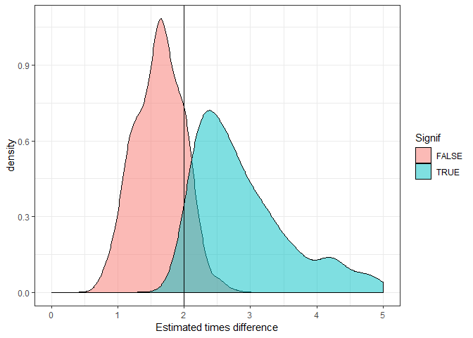

Using R and power analysis to inform experimental design
A collaborator once asked me: “can you do that thing where you take a little bit of data and model it up to make lots more data?”
Does it sound suspicious to fake a lot of data from a little bit of data? It depends on the context. Making up data is totally appropriate if you want to do a power analysis.
And ‘making-up’ data (let’s call it simulation from now on) for power analysis is a handy tactic for designing effective surveys and experiments. This post will look at why and how.
A brief introduction to power analysis
In the narrow-sense, power analysis it about type II error, or the chance your data and analysis won’t be able to detect an effect that is really there.
Type II errors are the quiet sibling to type I errors, which tend to get more focus. The whole “<0.05 is significant”” mentality is about type I errors.
Having a low type I is important if you want to say a new drug, which may have side-effects, works.
But in many fields, type II errors are more consequential. In environmental science in particular, we don’t want significant (in the non-statistical sense of the word) environmental change to go unnoticed. Poor power would mean we are unlikely to detect environmental change in our acidification experiments, or from say an oil spill decimating a seabird colony.
Pragmatically, if you are doing a PhD you have a limited amount of time to get publishable results. So you’d want enough power to detect an effect, should it be there.
Power analysis is also much more useful type II errors, when used in the broader sense of the term.
Broad-sense power analysis is about how well data and a statistical model work together to measure an effect. So it could be about whether we measure the right effect (not just whether we measure it at all).
In the broad and narrow sense, power analysis is a really helpful tool when you are designing experiments, or a field survey.
For more on traditional power analysis in environmental stats I recommend the textbook Quinn and Keough (or google it to find a pdf) or in the broad-sense Bolker’s excellent book
Power analysis for experimental and survey design
Let’s say you want to know whether there are more fish inside a marine reserve (that have no fishing) than outside the reserve. You are going to do a number of standardized transects inside and outside the reserve and count the numbers of fish.
Your fish species of interest are a very abundant sweetlips and a rather rare humphead wrasse. What’s the chance that you would be able to detect a two times difference in abundance for each fish species between reserves and fished areas?
We can address this question with power analysis by simulating ‘fake’ data for the surveys where there is a doubling of abundance, then fitting a statistical model to the fake data, then deciding whether or not the difference is ‘significant’ (e.g. p<0.05). Then we repeat that a 1000 times and count up the % of times we said there was a difference. That % is the power.
So we need to decide on a few things ahead of time, the sample size of surveys, the expected (mean) abundance values and the variance in abundance. This is where you could draw on earlier literature to make estimated guesses. The sample size is up for grabs and trying different sample sizes could be part of your power analysis.
Let’s assume there are normally 10 sweetlips per transect and 1 humphead wrasse per transect.
As the data are counts we’ll assume they are Poisson distributed. This amounts to assuming mean = variance, so the variance of sweetlips across transects is 10 and wrasse is 1.
Simulating data with R
To answer this question with R we are going to use quite a few handy packages:
library(purrr)
library(ggplot2)
library(broom)
library(dplyr)
library(tidyr)purrr is handing for creating 1000s of randomised datasets, ggplot2 is for plots, broom is for cleaning the 1000s of models we’ll fit, dplyr and tidyr are for data wrangling.
Now let’s create a function that simulates data and fits a model. This may look overwhelming, but don’t worry about the R details if you’re not that into R. All we are doing is creating a function that simultions some data from two groups (reserve or not) for n transects, and then fits a GLM and finally it spits out a p-value for whether there was a significant difference in the simulated data.
sim <- function(n, x1, x2){
x <- rep(c(x1, x2), each = n/2)
y <- rpois(n, lambda = x)
m1 <- glm(y ~ x, family = "poisson") %>% tidy()
m1
}Now we can use our simulation function to simulate counting wrasse on 20 transects (10 inside and 10 outside the reserve), and then fitting the GLM to that data:
set.seed(2001) #just do this to get the same result as me
sim(100, 1, 2)
## # A tibble: 2 x 5
## term estimate std.error statistic p.value
## <chr> <dbl> <dbl> <dbl> <dbl>
## 1 (Intercept) -0.522 0.287 -1.82 0.0690
## 2 x 0.618 0.167 3.69 0.000222So we get a table with mean estimated difference (on log scale), standard errors and p-values.
Narrow-sense power analysis
Now we use purrr to do this 1000 times:
mout <- map(1:1000, ~sim(20, 1, 2))Which results in 1000 lists, yuck. Let’s do some data wrangling on the output:
mout2 <- mout %>%
bind_rows(.id = "rep") %>%
filter(term != "(Intercept)") %>%
mutate(Signif = p.value < 0.05,
rep = as.numeric(rep))
head(data.frame(mout2))
## rep term estimate std.error statistic p.value Signif
## 1 1 x 6.931472e-01 0.4082471 1.697862e+00 0.089533876 FALSE
## 2 2 x 8.266786e-01 0.4531632 1.824240e+00 0.068115744 FALSE
## 3 3 x 5.877867e-01 0.3220304 1.825252e+00 0.067963001 FALSE
## 4 4 x 1.145132e+00 0.4339488 2.638865e+00 0.008318414 TRUE
## 5 5 x 1.823216e-01 0.3496022 5.215114e-01 0.602010565 FALSE
## 6 6 x -2.823275e-13 0.3429971 -8.231194e-13 1.000000000 FALSENow we get a dataframe of the 1000 simulations, indicating whether p for the difference between reserve vs unreserved was <0.05 (column ‘Signif’).
To get the power, we just sum Signif and divide by the 1000 trials:
sum(mout2$Signif)/1000
## [1] 0.408So an ~40% chance we’d detect a 2x difference in wrasse abundance with 20 transects. This is the 2-sided probability, arguably for this question we could also use a one-sided test.
Try it again for the sweetlips (expected abundance doubling from 10 to 20). You’ll see you get much more power with this more abundance species (almost 100%).
You could try this with different sample sizes to get an idea of how much effort you need to invest in doing transects in order to see a difference (if the difference is really there of course).
Broad-sense power analysis
How close does our approach get us to the 2x difference? We can also answer that by looking at the estimates from the GLM:
ggplot(mout2, aes(x = exp(estimate))) +
geom_density(fill = "tomato") +
theme_bw() +
geom_vline(xintercept = 2) +
xlab("Estimated times difference")
This distribution shows the expected outcomes we’d estimate over 1000 repeats of the surveys. So the solid vertical line is the ‘real’ difference. Note the long tail to the left of drastic overestimates. It is common with small sample sizes that we might overestimate the true effect size. More on this later.
I took the exponent of the estimate (estimated mean difference), because the Poisson GLM has a log link, so the estimate is on the log scale. Taking its exponent means it is now interpreted as a times difference (as per the x-axis label).
Bias in significant estimates
It is reasonably well known that over-use of p-values can contribute to publication bias, where scientists tend to publish papers about significant and possibly overestimated effect sizes, but never publish the non-significant results. This bias can be particularly bad with small sample sizes, because there’s a reasonable chance we’ll see a big difference and therefore, make a big deal about it.
We can look at this phenomena in our simulations. First, let’s take the mean of our estimated effect sizes for those trials that were significant and those that were not:
signif_mean <- mean(exp(filter(mout2, Signif)$estimate))
nonsignif_mean <- mean(exp(filter(mout2, !Signif)$estimate))
all_mean <- mean(exp(mout2$estimate))
c(all_mean, signif_mean, nonsignif_mean)
## [1] 2.210280 3.062810 1.622725So average effect size for the significant trials is >3x (remember the real difference is 2x). If we take the average across all trials it is closer to the truth (2.3x).
Clearly if we only publish the significant results, over many studies this will add up to a much bigger difference than is really there. This can be a problem in some fields. I don’t think publication bias particularly affects studies of marine reserves, because typically there are multiple research questions, so the researchers will publish anyway.
Let’s look at this as a plot. We’ll do the same distribution as above, but with different colours for significant versus non-significant.
ggplot(mout2, aes(x = exp(estimate), fill = Signif)) +
geom_density(alpha = 0.5) +
theme_bw() +
geom_vline(xintercept = 2) +
xlab("Estimated times difference") +
xlim(0,5)
You can clearly see the significant trials almost always overestimate the true difference (vertical line).
What’s the solution? Make sure you report on non-significant results. And try to aim for larger sample sizes.